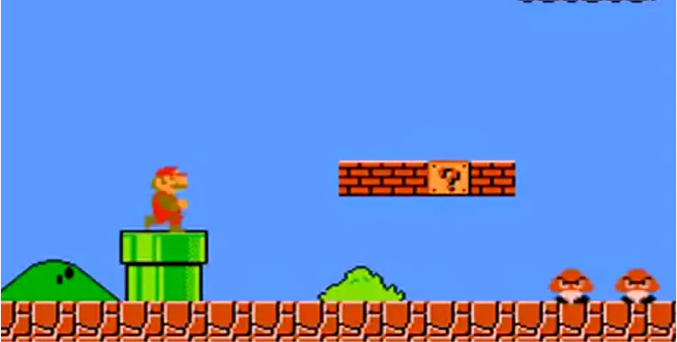
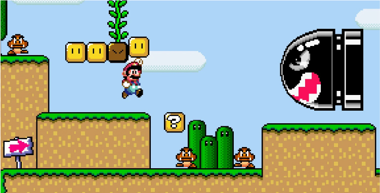
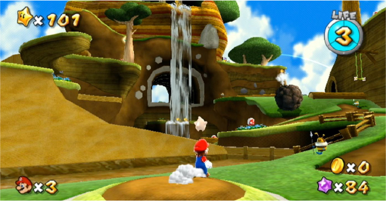
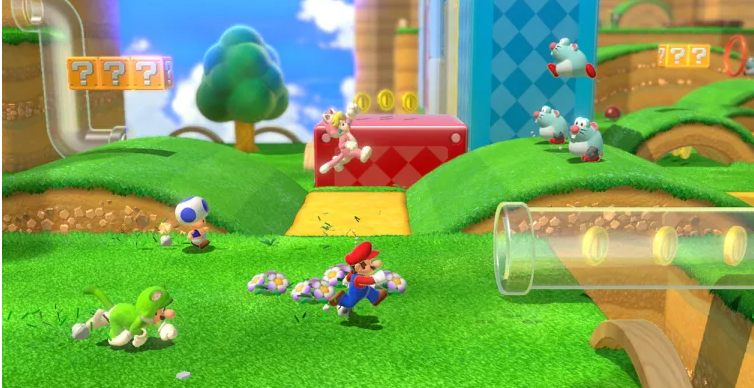
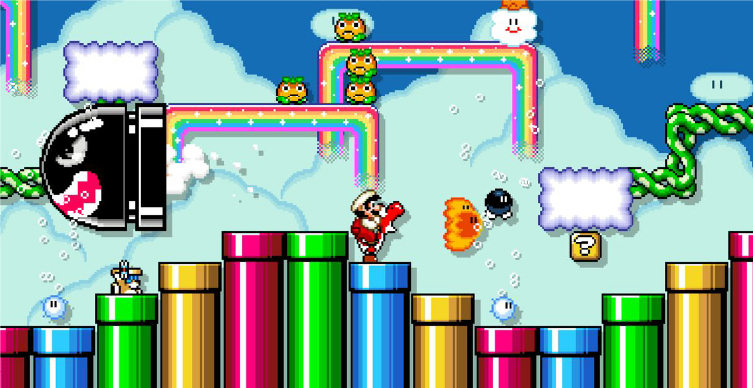

Super Mario Bros 1985
In de fantasierijke omgeving van het Paddenstoelenrijk valt een stam van schildpadachtige wezens bekend als de Koopa Troopas het koninkrijk binnen en gebruikt de magie van zijn koning, Bowser, om zijn bewoners, bekend als het Paddenstoelenvolk, te veranderen in levenloze objecten zoals bakstenen, stenen en paardenhaarplanten. Bowser en zijn leger ontvoeren ook prinses Toadstool, de prinses van het Paddenstoelenrijk en de enige die de betovering van Bowser kan omkeren. Na het nieuws te hebben gehoord, gaat Mario op pad om de prinses te redden en het koninkrijk van Bowser te bevrijden.
Mario Super World 1990
Mario en Luigi besluiten met Princess Toadstool op vakantie te gaan naar een plaats genaamd Dinosaur Land, een wereld met een prehistorisch thema dat wemelt van dinosaurussen en andere vijanden. Terwijl ze op het strand rust, wordt Princess Toadstool gevangen genomen door Bowser. Als Mario en Luigi wakker worden, proberen ze haar te vinden en na uren zoeken stuiten ze op een gigantisch ei in het bos. Het komt plotseling uit en daaruit komt een jonge dinosaurus genaamd Yoshi, die hen vertelt dat zijn dinosaurusvrienden ook door kwaadaardige Koopalings in eieren zijn opgesloten.
Super Mario Galaxy 2007
Het honderdjarige Sterrenfestival wordt gehouden om een komeet in het Paddenstoelenrijk te bekijken. Op de avond van het Sterrenfestival ontdekt prinses Peach een stervormig wezen genaamd een Luma en nodigt ze Mario uit om naar het festival te komen om de Luma te zien die ze heeft ontdekt. Net als Mario bij de stad aankomt, valt Bowser het Paddenstoelenrijk binnen in een vloot van luchtschepen, waarbij het landschap wordt bezaaid met vuurballen en zijn inwoners versteend met kristallen.
Super Mario 3d world 2013
Mario, Luigi, Peach en Toad kijken naar een vuurwerkshow totdat ze een gekantelde glazen pijp vinden. Nadat Mario en Luigi het hebben gerepareerd, verschijnt er een groene sprookjesachtige Sprixie-prinses die hen vertelt dat Bowser de rest van de Sprixie-prinsessen heeft ontvoerd en in potten heeft opgesloten. Hij arriveert en vangt haar voordat hij door de pijp ontsnapt, terwijl de helden erin gaan en hem achtervolgen. Ze bevinden zich in een rijk dat bekend staat als "The Sprixie Kingdom" en gaan op zoek naar de Sprixies.
Super Mario maker 2015
Met Super Mario Maker kunnen spelers levels maken in de stijl van de Super Mario-serie en deze op internet publiceren voor andere spelers. De cursussen zijn gebaseerd op de gameplay en visuele stijl van Super Mario Bros., Super Mario Bros. 3, Super Mario World en New Super Mario Bros. U, die allemaal de fysica van de laatste delen. De gameplay-mechanica en het gedrag van de vijand variëren tussen spelmodi. Sommige elementen zijn beperkt tot specifieke spelstijlen en andere elementen kunnen worden samengevoegd tot andere spelstijlen, zoals Boos in Super Mario Bros.
